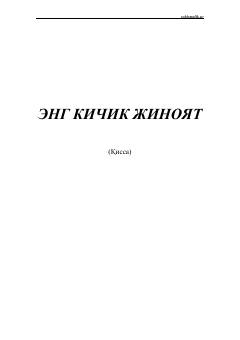

EKKichik bir oʻgʻirlik orqali insoniy zaiflik va axloq haqida qissa.
Bu qissa Moʻhina kampirning uyiga tushgan oʻgʻirlik voqeasidan boshlanib, qoʻshnilar oʻrtasidagi mojaroni, insoniy zaifliklarni va diniy-axloqiy saboqlarni tasvirlaydi. Asarda oddiy odamlarning hayoti, gunoh va tavba mavzulari islomiy ruh bilan yoritilgan. Tohir Malik oʻziga xos uslubida kichik jinoyat orqali katta hayotiy haqiqatlarni ochib beradi.